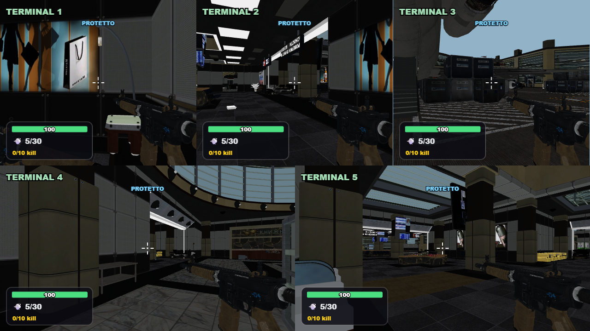
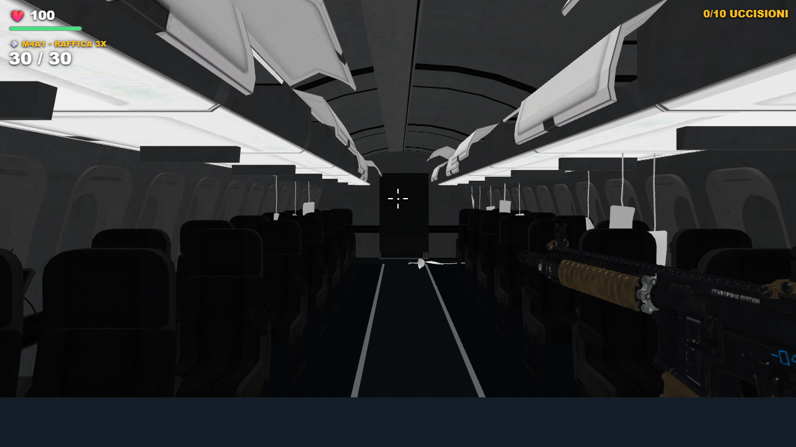
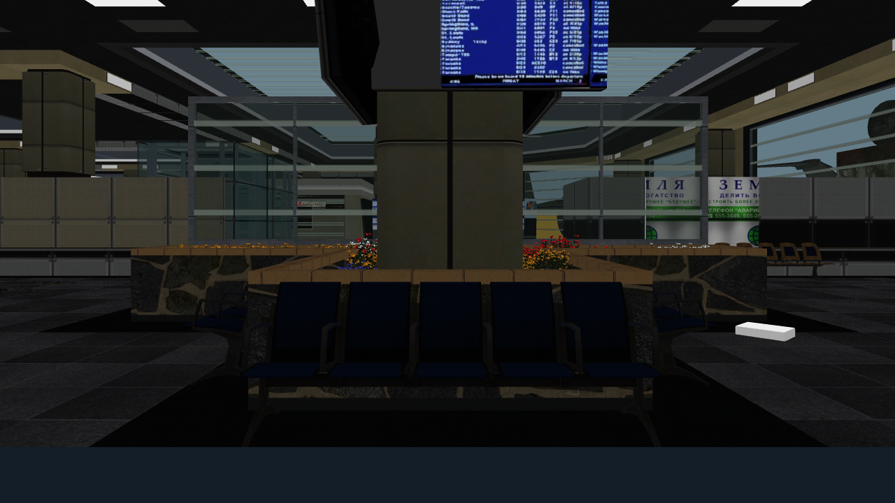
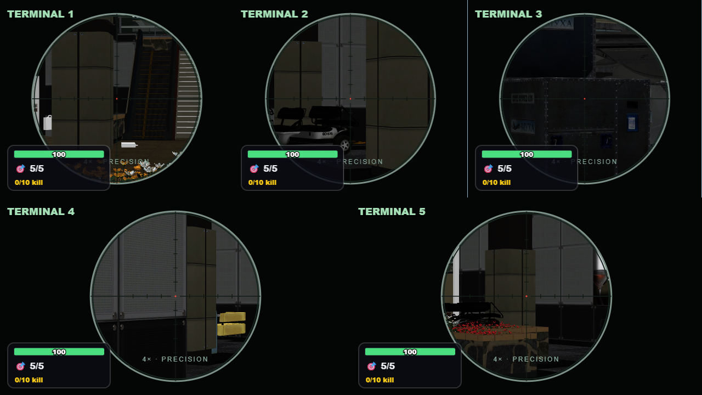

Terminal 2.3
Campione RTX 3050, cinque visuali a 1280×720: 42,6 → 59,3 FPS. Ingresso completo locale: 5,75 → 4,20 secondi. Misure brevi nelle stesse condizioni, senza garanzie per ogni dispositivo o scena.

Cinque visuali e indicatore PROTETTO compatto.
M4A1 nella cabina: materiali rifiniti e dettagli dell’arma più leggibili.
Terminal conserva la geometria e i cartelloni riparati.
Sniper ADS 4× conservato.Sei armi con la sola Ray Gun rossa. Collisioni, due accessi all’aereo e gameplay invariati.